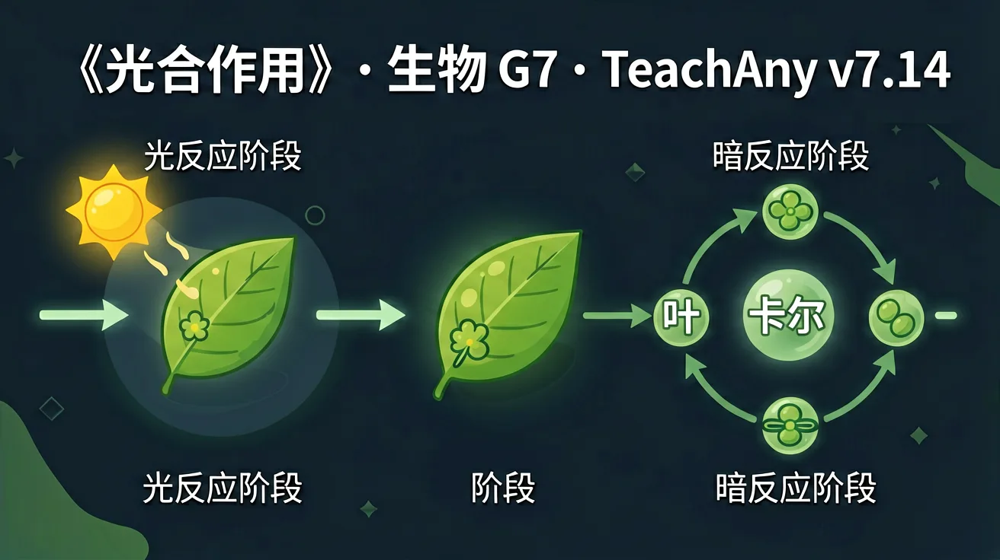
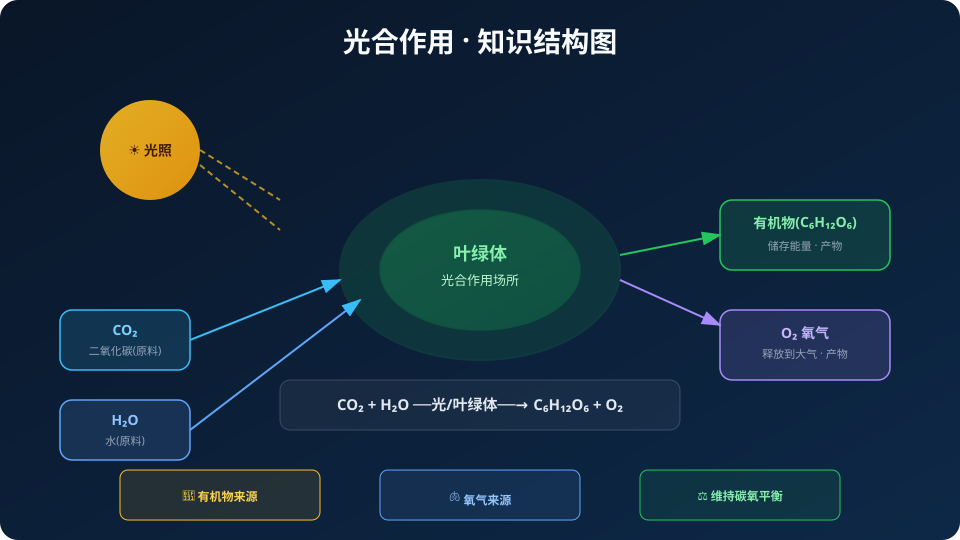

Interactive Canvas
光合速率模拟器
调节光照、CO₂和温度滑块，观察氧气释放量变化
调节滑块观察O₂释放速率变化
绿色植物利用阳光的能量，将二氧化碳和水转变为有机物并释放氧气——这个过程养活了地球上几乎所有生命。


选一个你关心的问题
选择或输入后，本课围绕你的问题展开。
光合作用的原料是什么？
光合作用是绿色植物利用光能，在叶绿体中将二氧化碳和水转变为储存能量的有机物（如葡萄糖），并释放氧气的过程。这是地球上最重要的化学反应之一，每年固定约2000亿吨碳。
但是：植物既没有嘴也没有胃，它们如何"制造食物"？
所以：学习光合作用——理解绿色植物这台神奇的"太阳能食物工厂"
反应式：
CO₂ + H₂O ──光照──→ 有机物(C₆H₁₂O₆) + O₂
条件：光照 & 叶绿体 ｜ 原料：CO₂、H₂O ｜ 产物：有机物、O₂
二氧化碳（来自空气，通过气孔进入）+ 水（来自土壤，通过导管运输到叶片）
有机物（主要是葡萄糖，储存化学能）+ 氧气（释放到大气中）
光照提供能量驱动反应；叶绿体是光合作用的场所，含有叶绿素可以捕获光能
光合作用的发现历经数百年，多位科学家通过精巧实验逐步揭示了这一过程。每个实验都巧妙地控制了变量，其设计思路对我们学习科学方法论有重要启发。下面介绍三个里程碑式的实验，它们分别证明了光合作用的原料、产物和条件。
将一棵2.3kg柳树种在90.8kg干土中，只浇水，5年后柳树重76.7kg但土壤仅减少约57g。结论：植物生长的物质主要来自水（后人补充：还有CO₂）。变量控制：只给水不施肥，排除土壤因素。
密封玻璃罩内蜡烛熄灭、小鼠死亡；但放入绿色植物后蜡烛能燃烧、小鼠能存活。结论：植物能更新空气成分，释放氧气。局限：未发现光的必要性。
将天竺葵暗处理后，用锡箔纸遮住叶片一半，光照数小时后用碘液检测。结果：见光部分变蓝（有淀粉），遮光部分不变色。结论：光是光合作用的必要条件，产物是淀粉（有机物）。
光合作用不仅仅是植物自身的营养方式，它对整个地球生态系统具有不可替代的意义。可以说没有光合作用就没有现在的地球生命。光合作用维系着大气中氧气和二氧化碳的平衡，为几乎所有生物提供了食物和能量的最终来源。化石燃料（煤炭、石油、天然气）实际上也是远古光合作用固定的太阳能。光合作用还通过吸收CO₂参与全球碳循环调节气候变化。
直接或间接为几乎所有生物提供食物。食物链中的能量最终都来自植物光合作用固定的太阳能。
释放氧气维持大气含氧量约21%，满足所有需氧生物的呼吸需求。地球早期大气无氧。
吸收CO₂释放O₂，维持大气中碳和氧的相对平衡，调节温室效应稳定气候。
光合作用的速率受多种环境因素影响。在农业生产中，了解这些因素可以帮助我们合理安排栽培措施，提高作物产量。主要的影响因素包括光照强度、二氧化碳浓度和温度三个方面，它们都与反应式中的条件和原料有关。每种因素都存在最适范围，并非越多越好。
光是能量来源。在一定范围内光越强速率越快，达到光饱和点后不再增加。阴雨天产量低就是光照不足的原因。
CO₂是原料。大棚种植适当增加CO₂浓度（如施有机肥释放CO₂）可显著提高产量。
影响酶活性。一般最适温度25-30℃，过高（>40℃）酶失活，过低（<5℃）反应极慢。
调节光照、CO₂和温度滑块，观察氧气释放量变化
错：光合作用和呼吸作用是一回事
对：光合是合成有机物储存能量，呼吸是分解有机物释放能量，方向相反
错：光合作用只在白天进行
对：关键是有无光照而非白天黑夜，人工补光夜晚也可进行
错：有阳光就能光合作用
对：CO₂和H₂O是原料，光是能量，叶绿体是场所，四者缺一不可
写出光合作用的文字表达式，标明条件和场所。
解释为什么大棚种植蔬菜时要适当增加CO₂浓度？
设计实验证明光合作用产生了氧气（说明材料、步骤和预期现象）。
将金鱼藻放在光下，可以看到有气泡产生，这些气泡中的气体主要是？
光合作用是地球上最重要的化学反应，是所有生命的能量基础。
光合作用是绿色植物、藻类和某些细菌利用光能将二氧化碳和水转化为有机物（如葡萄糖）并释放氧气的过程。其化学方程式为：6CO₂ + 6H₂O + 光能 → C₆H₁₂O₆ + 6O₂。这一过程不仅是地球上绝大多数生命体的能量来源，还维持了大气中氧气和二氧化碳的平衡。例如，一片森林通过光合作用每年可吸收数百吨二氧化碳，同时释放大量氧气，这就是为什么森林被称为‘地球之肺’。若没有光合作用，地球上的氧气将在约2000年内耗尽。
光合作用主要在植物的叶绿体中进行，叶绿体含有类囊体和基质。类囊体膜上分布着光合色素（如叶绿素a、叶绿素b、胡萝卜素等），负责捕获光能；基质则是暗反应的场所。例如，显微镜下观察菠菜叶切片，可见叶肉细胞中密集的绿色颗粒即为叶绿体。其结构适应功能的特点包括：类囊体的堆叠增大受光面积，基质中的酶催化碳反应。若叶绿体受损（如缺镁导致叶绿素合成不足），植物会出现黄化现象。
光反应发生在类囊体膜上，分为光能捕获、电子传递和光合磷酸化三个步骤。光系统II（PSII）吸收光能后分解水分子，释放氧气和H⁺，并产生高能电子；电子经传递链传递至光系统I（PSI）时驱动ATP合成，最终将NADP⁺还原为NADPH。例如，用银边天竺葵实验可见只有绿色部分能进行光反应，证明叶绿素是关键。此过程需光，故夜间停止。若用除草剂阻断电子传递链（如百草枯），植物会因无法合成ATP而死亡。
暗反应在叶绿体基质中进行，利用光反应产生的ATP和NADPH将CO₂固定为有机物，包括碳固定、还原和RuBP再生三阶段。关键酶Rubisco催化CO₂与RuBP结合生成3-磷酸甘油酸（PGA），后者被还原为三碳糖（G3P）。例如，C₃植物（如水稻）在高温干旱时因光呼吸浪费能量，而C₄植物（如玉米）通过空间分离提高效率。若环境中CO₂浓度过低（如密闭温室），暗反应速率会显著下降。
光合作用受光照强度、CO₂浓度、温度、水分和矿质元素等多因素影响。光照不足时（如阴天），光反应受限；CO₂浓度低于0.01%时暗反应受抑制；温度通过影响酶活性起作用（最适25-30℃）。例如，冬季大棚种植需补光和增施CO₂肥。缺水导致气孔关闭减少CO₂吸收，缺镁则直接阻碍叶绿素合成。实践中可通过‘控制变量法’探究各因素影响，如用LED灯调节不同光质对生菜生长的影响。
光合作用与呼吸作用互为逆过程，但并非简单可逆：前者将光能转为化学能储存，后者释放能量供生命活动。例如，植物白天光合速率大于呼吸速率时积累有机物，夜间仅进行呼吸作用消耗有机物。两者共同构成碳氧循环，维持生态系统平衡。误区：认为植物只有光合作用——实际上活细胞时刻进行呼吸。可通过对比实验验证：分别测定光照和黑暗条件下密闭容器中CO₂浓度变化。
科学家通过仿生学模拟光合作用开发新能源技术，如人工光合系统利用催化剂分解水制氢。农业上通过调控光周期（如补光培育反季草莓）、选育高光效品种（如超级稻）提高产量。例如，以色列沙漠温室结合滴灌和CO₂施肥使番茄产量提升3倍。未来可能通过改造蓝细菌直接生产生物燃料。设计实验：比较不同波长LED灯对水培生菜光合速率的影响，优化种植方案。
从1771年普利斯特利发现植物‘净化空气’，到1941年卡尔文用¹⁴C示踪揭示碳途径，光合作用研究体现了科学探索的渐进性。范·海尔蒙特柳树实验证明植物增重主要来自水（忽略空气贡献），启示实验设计需全面考虑变量。现代技术如红外CO₂分析仪可实时监测光合速率。探究任务：分析科学家如何通过‘提出问题→设计实验→修正结论’推动认知发展，例如布莱克曼发现限速因素的实验逻辑。
1. 植物为什么需要阳光？2. 你能否列举一个日常生活中观察到的光合作用现象？
1. 光反应和暗反应的能量转换形式有何不同？2. 若突然将C₃植物移至高温强光环境，其光合速率会如何变化？为什么？
误区：认为光合作用只在白天进行，夜间完全停止。错因：混淆了光反应（需光）与暗反应（全天持续）。诊断：通过测定植物24小时内的CO₂吸收曲线，发现夜间仍有碳固定活动。
迁移挑战：设计一个城市屋顶农场的光合效率优化方案，需分析当地光照条件、作物选择（C₃/C₄植物）及CO₂补给策略，并解释其科学依据。
先独立作答，再点选项查看对错与错因。
光合作用的场所是植物细胞的哪个结构？
下列哪项是光合作用的正确反应式？
光合作用中释放的气体是？
光合作用的能量转换过程是将____能转化为化学能
答案：光
叶绿素捕获光能并转化为葡萄糖中的化学能
植物通过____结构吸收二氧化碳进行光合作用
答案：气孔
叶片表皮的气孔是气体交换通道
关于光合作用影响因素说法正确的是？
设计实验验证不同光照条件下植物释放氧气量的变化